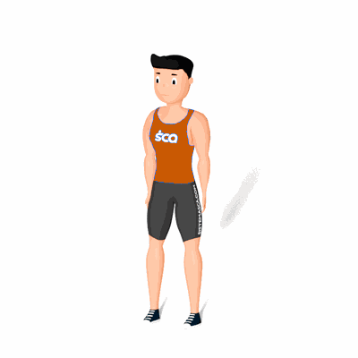

Rotação dos Ombros

Exercício de aquecimento da região do ombros, preparando para a atividade física.
Ficha Técnica
Tipo: Aquecimento
Grupo Muscular: Ombro
Aparelho: Nenhum
Músculos: Nenhum
Como realizar
- Em pé com as pernas abertas na largura do ombros;
- Mantenha os braços para baixo e estendidos;
- Inicie o movimento rotacionando no sentido horário os ombros pela quantidade de vezes definida pelo professor;
- Logo depois, rotacione no sentido anti-horário no sentido horário pela quantidade de vezes definida pelo professor.
 RC STORE
RC STORE